plot_heatmap() draws the presence/absence matrix with ComplexHeatmap.
It ships with three ready-made styles so that the first plot already
looks finished, and every style can be adjusted with a handful of
arguments. This article shows the three styles, the arguments shared by
all of them, and how to go beyond them when you need to.
library(paneffectR)
visual_dir <- system.file("testdata", "visual", package = "paneffectR")
pa_binary <- readRDS(file.path(visual_dir, "pa_binary.rds"))
pa_score <- readRDS(file.path(visual_dir, "pa_score.rds"))
clusters <- readRDS(file.path(visual_dir, "clusters_visual.rds"))The example data has 62 orthogroups across 6 assemblies with a known structure: 10 core orthogroups, 40 accessory, and 12 unique to one assembly.
The three styles
Pick a style with the style argument. All three share
the same layout rules: a light grid between cells on matrices of up to
200 rows, slim dendrograms, column labels at 45 degrees, and a legend
that says “Absent” and “Present” rather than 0 and 1.
clean: the default
One hue on a light grey background. Grey rather than white for absence means the matrix reads as a grid of cells, not as blue shapes floating on the page.
plot_heatmap(pa_binary)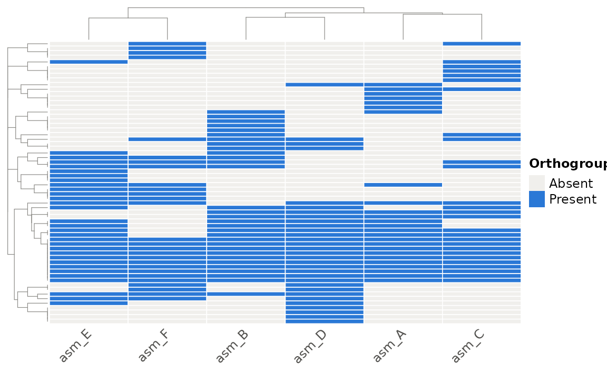
Count and score matrices use a sequential ramp. Scores are drawn in orange so that a score heatmap is never mistaken for a presence/absence heatmap. Cells with no protein stay grey.
plot_heatmap(pa_score)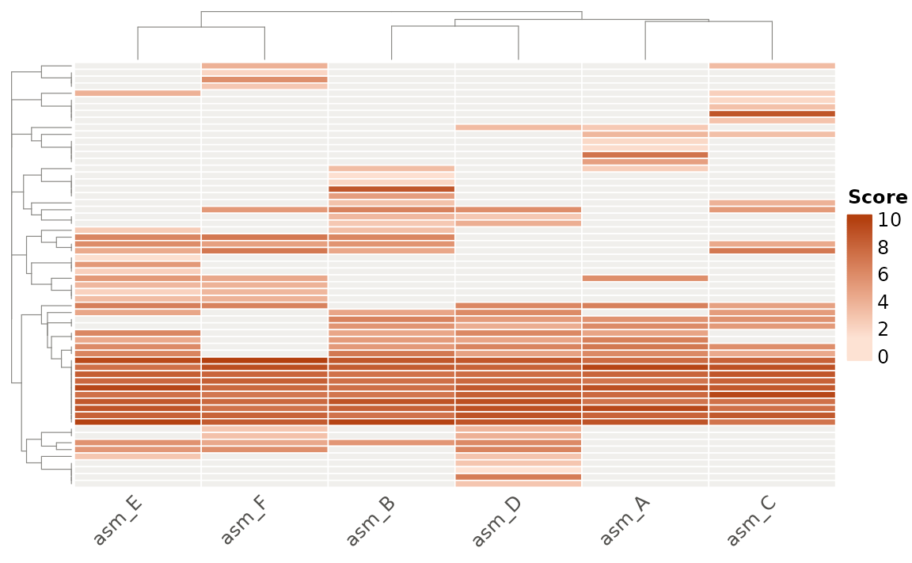
pan: core, accessory and unique
The pan style answers the question most people bring to
a presence/absence matrix: which orthogroups are in every assembly,
which are shared by some, and which are found in only one? Rows are
split into Core (every assembly),
Accessory (more than one, not all) and
Unique (exactly one) blocks, each with a labelled side
bar. Within a block, rows are still clustered.
plot_heatmap(pa_binary, style = "pan")
On a binary matrix the cells take the class colour, so the three classes can be read at a glance. On a count or score matrix the cells keep their magnitude ramp and the blocks carry the class:
plot_heatmap(pa_score, style = "pan")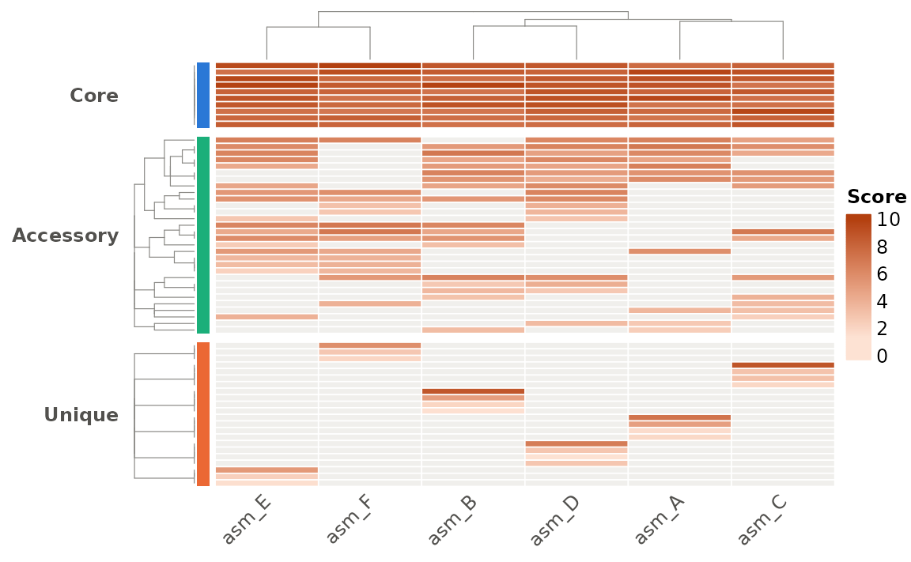
plot_pan_structure() uses finer categories (it separates
Rare from Accessory using a threshold); the heatmap keeps to three
classes so the blocks stay readable.
mono: for print
Black on white with grey grid lines and a frame. Use it for greyscale figures, supplementary material, or anywhere colour is unavailable.
plot_heatmap(pa_binary, style = "mono")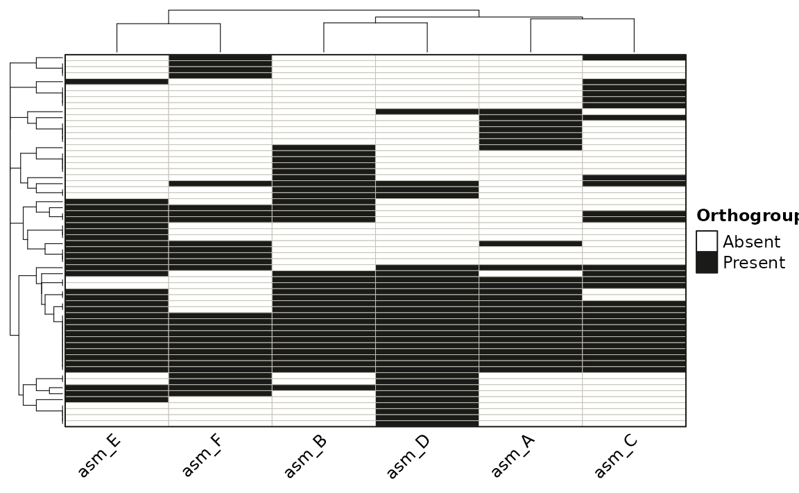
Count and score matrices use a grey ramp in this style.
Arguments shared by every style
Clustering and distance
Rows and columns are clustered by default.
distance_method chooses the distance: "binary"
(default), "jaccard", or "bray-curtis" (which
also uses the magnitude in count and score matrices). Turn either
dendrogram off to keep the matrix in its original order.
plot_heatmap(pa_binary, cluster_rows = FALSE, distance_method = "jaccard")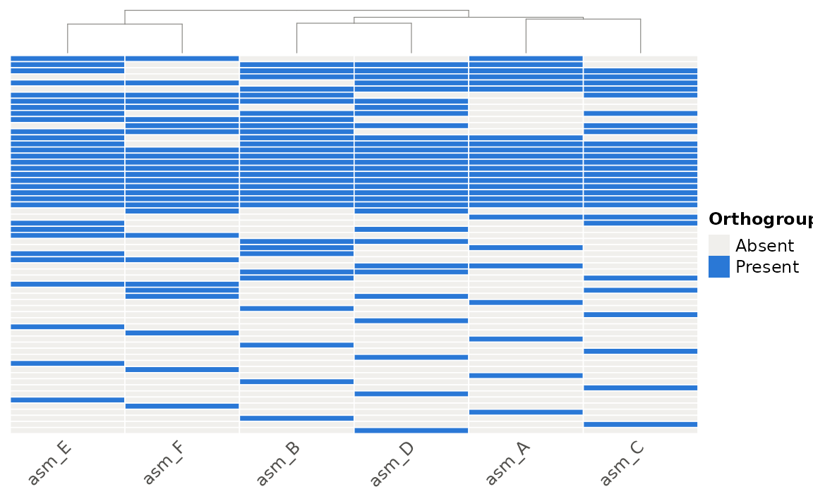
Row names
Row names are hidden by default because most matrices have too many rows to label. For a small matrix, or after filtering, turn them on:
small <- pa_binary[1:12, ]
plot_heatmap(small, show_row_names = TRUE)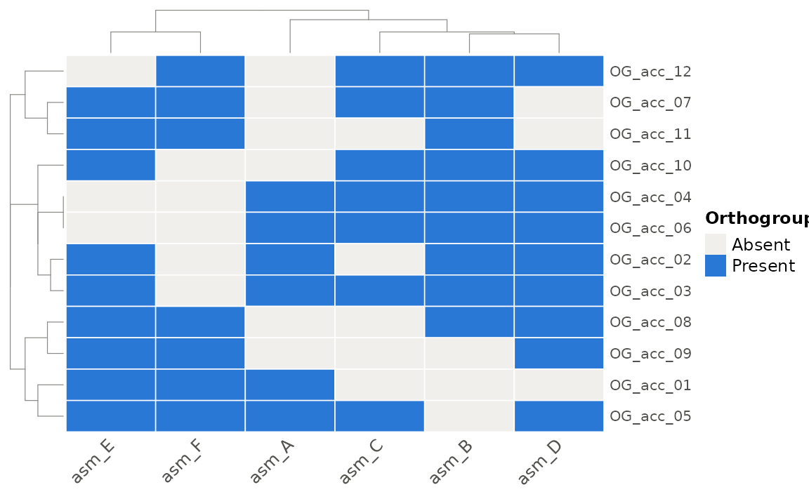
Your own colours
color replaces the cell colours of any style. For binary
matrices give two colours (absent, present); for count and score
matrices give a vector of colours to interpolate, or a
circlize::colorRamp2() function for full control over the
breaks.
plot_heatmap(pa_binary, color = c("grey95", "#6250d6"))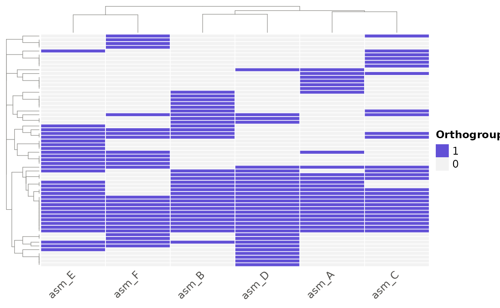
plot_heatmap(
pa_score,
color = circlize::colorRamp2(c(0, 5, 10), c("#f0efec", "#eda100", "#d03b3b"))
)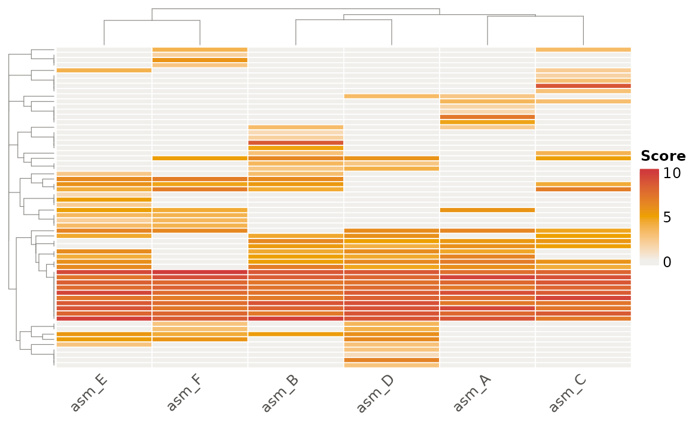
Annotations
Annotation tracks sit beside the matrix. Give a data frame whose row
names are assembly names (col_annotation, drawn on top) or
orthogroup IDs (row_annotation, drawn on the left). Each
column becomes a track.
assembly_info <- data.frame(
row.names = colnames(pa_binary$matrix),
host = c("wheat", "wheat", "barley", "barley", "rye", "rye"),
year = c(2015, 2018, 2016, 2019, 2017, 2020)
)
plot_heatmap(pa_binary, style = "pan", col_annotation = assembly_info)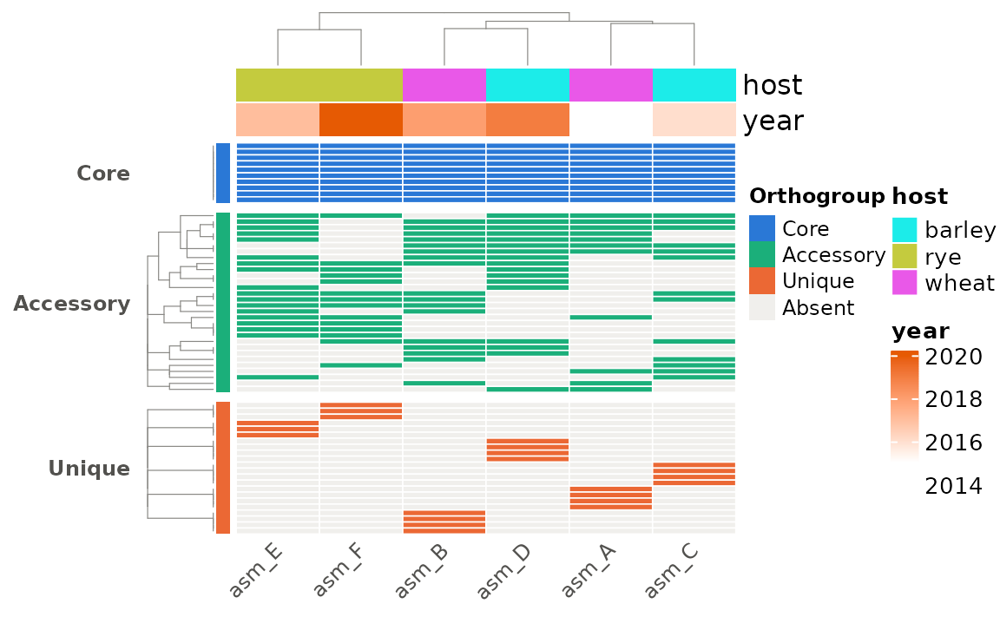
Large matrices
Above max_cluster_rows (5000) rows, the row dendrogram
is replaced by a fast ordering of the distinct presence/absence
patterns, and the grid lines are dropped above 200 rows. For a figure,
reduce the matrix first:
pa_small <- build_pa_matrix(clusters, exclude_singletons = TRUE)
plot_heatmap(pa_small, style = "pan")Saving a figure
plot_heatmap() returns the heatmap without drawing it
(printing it at the console draws it). To save, open a graphics device,
draw, and close:
ht <- plot_heatmap(pa_binary, style = "pan")
png("heatmap.png", width = 7, height = 8, units = "in", res = 300)
ComplexHeatmap::draw(ht)
dev.off()
pdf("heatmap.pdf", width = 7, height = 8)
ComplexHeatmap::draw(ht)
dev.off()Height matters more than width: allow roughly 0.1 inches per row if you want the grid lines visible, and more if row names are shown.
Customising beyond the styles
The object plot_heatmap() returns is an ordinary
ComplexHeatmap::Heatmap. Nothing about it is locked:
anything that package can do to a heatmap, you can do to this one. You
do not need to learn ComplexHeatmap to use paneffectR, but when a figure
needs one more thing, it is there.
The simplest route is extra arguments. Anything
plot_heatmap() does not recognise is passed to
ComplexHeatmap::Heatmap() and overrides the style’s own
setting. A few that come up often:
plot_heatmap(
pa_binary,
style = "pan",
column_title = "Effector orthogroups across six isolates",
column_names_rot = 90,
rect_gp = grid::gpar(col = NA) # no grid lines
)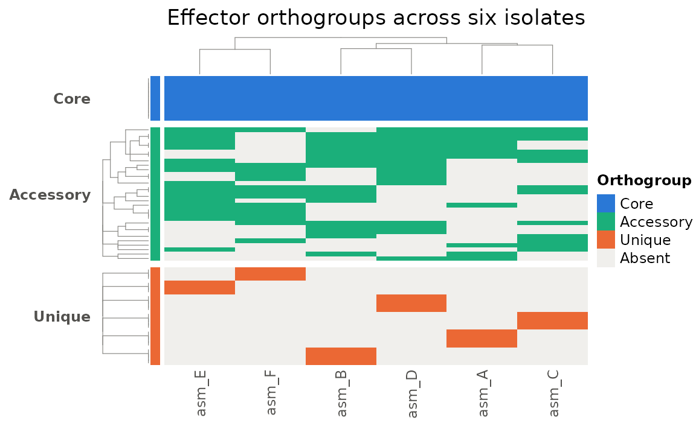
| Argument | Effect |
|---|---|
column_title, row_title
|
Titles along the top or side |
column_names_rot |
Angle of assembly labels (0, 45, 90) |
column_names_gp, row_names_gp
|
Font size and colour of labels,
e.g. grid::gpar(fontsize = 7)
|
rect_gp |
Cell outline; grid::gpar(col = NA) removes the
grid |
show_row_dend, show_column_dend
|
Cluster without drawing the dendrogram |
width, height
|
Fix the matrix size, e.g. grid::unit(8, "cm")
|
name |
Legend title |
Beyond arguments, the returned object can be combined with other
heatmaps and annotations using +, drawn with a custom
legend position via ComplexHeatmap::draw(), or inspected
with helpers such as ComplexHeatmap::row_order() to recover
which orthogroups ended up in which block:
ht <- ComplexHeatmap::draw(plot_heatmap(pa_binary, style = "pan"))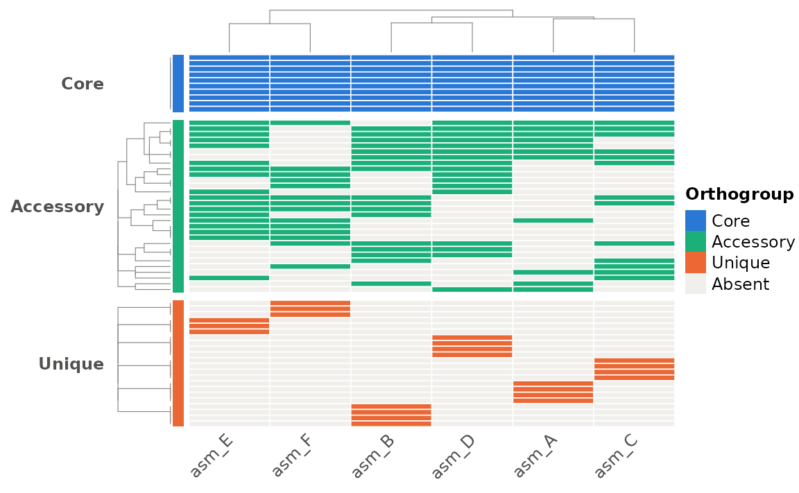
blocks <- ComplexHeatmap::row_order(ht)
lapply(blocks, function(idx) head(rownames(pa_binary$matrix)[idx]))
#> $Core
#> [1] "OG_core_10" "OG_core_09" "OG_core_08" "OG_core_07" "OG_core_06"
#> [6] "OG_core_05"
#>
#> $Accessory
#> [1] "OG_acc_05" "OG_acc_03" "OG_acc_15" "OG_acc_02" "OG_acc_14" "OG_acc_04"
#>
#> $Unique
#> [1] "OG_uniq_06" "OG_single_006" "OG_single_012" "OG_uniq_05"
#> [5] "OG_single_005" "OG_single_011"For everything else, the ComplexHeatmap Complete Reference is thorough and well organised; the chapter “A Single Heatmap” covers all the arguments above.